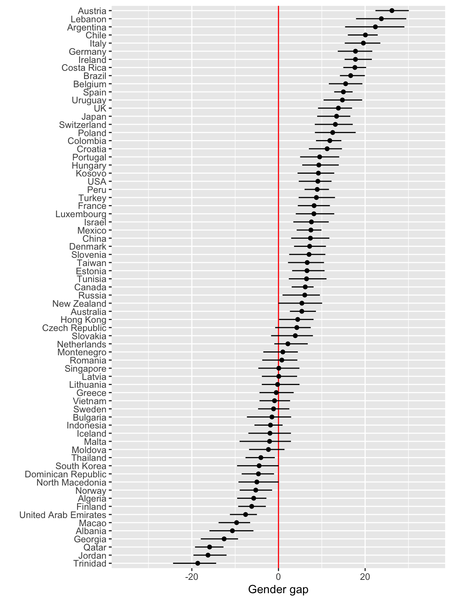

Chapter 28 PISA: Programme for International Student Assessment
Every three years an international survey is conducted to assess the educational systems across the globe by testing 15 year olds on math, science and reading, called the Programme for International Student Assessment (PISA). It measures their readiness to meet life challenges and workforce preparedness. As of 2020, according to the PISA web site more than 90 countries and 3 million students have been involved.
Each student, school, parent are also asked to complete extensive questionnaires. Schools provide information about their resources staff qualifications and staffing levels. Parents are asked about the household environment and student support. Students are asked about their interest in different subjects and their friend networks.
The data is used by individual countries to inform education policy and improve learning. The news media take this as an opportunity to measure and comment on their country against other countries, and raising the concern about girls and math. Here’s a sample of headlines after the 2018 data release:
Vital Signs: Australia’s slipping student scores will lead to greater income inequality Richard Holden, The Conversation
In China, Nicholas studied maths 20 hours a week. In Australia, it’s three Michael Fowler and Adam Carey, Sydney Morning Herald
New Zealand top-end in OECD’s latest PISA report but drop in achievements ‘worrying’ Jessica Long and Mandy Te, Stuff
Not even mediocre? Indonesian students score low in math, reading, science: PISA report Karina M. Tehusijarana, The Jakarta Post
A significant gender gap in maths performance in favour of male students has returned, despite closing in 2015 Natassia Chrysanthos, Sydney Morning Herald
28.1 Data access
The data, from 2000 through to the most recent survey, can be accessed at http://www.oecd.org/pisa/data/. The format of the data by year is different, but in recent years it is provided in proprietary binary formats. The variables collected differ slightly from year to year, although there is a core set of variables that are always included and coded identically.
There are multiple files associated with each survey, containing the student questionnaire responses and test scores, school and parent questionnaire responses, two cognitive item responses, and assoociated data dictionaries. In the following analysis we focus on the 2015 student data. It is approximately 580Mb, contains 615 attributes on more than 270,000 students.
28.2 Data pre-processing
Read the data directly from the web site.
# From http://www.oecd.org/pisa/data/2015database/ download
# the SPSS format zip file `Student questionnaire data file (419MB)'
library(haven)
pisa_2015 <- read_sav("https://webfs.oecd.org/pisa/PUF_SAS_COMBINED_CMB_STU_QQQ.zip") Create a local SQLite database to make it faster to make various summaries and subsets.
library(tidyverse)
library(dbplyr)
library(sqldf)
library(DBI)
db <- dbConnect(SQLite(), dbname="data/PISA.sqlite")
dbWriteTable(conn=db, name="student", value=pisa_2015)
dbListFields(db, "student")Use the database to extract a subset of variables.
db <- dbConnect(SQLite(), dbname="data/PISA.sqlite")
tb <- tbl(db, "student")
scores <- tb %>%
select(CNT, ST004D01T, PV1MATH, PV1READ, PV1SCIE, SENWT) %>% collect()
scores <- scores %>%
rename(gender=ST004D01T,
math=PV1MATH, reading=PV1READ, science=PV1SCIE,
w=SENWT)
save(scores, file="data/pisa_scores.rda")28.3 Examining the gender gap across countries
The gender gap in math is a common discussion, with the concern being that girls tend to score lower than boys on average in standardized math tests. The PISA data provides an opportunity to explore the gender gap across numerous countries.
28.3.1 Clean up country codes
Each country is coded using three letters, which mirror international standard ISO codes, except that a few are unique to this data. In order to join the data, with country names, or map data, these need to be recoded or the records dropped.
library(tidyverse)
library(ISOcodes)
data("ISO_3166_1")
# Load data
load("data/pisa_scores.rda")
# The country information will be used to jooin the data with map data
# and the ISOcodes package provides information about codes and country
scores <- scores %>%
mutate(CNT=recode(CNT, "QES"="ESP", "QCH"="CHN", "QAR"="ARG", "TAP"="TWN")) %>%
filter(CNT != "QUC") %>%
filter(CNT != "QUD") %>%
filter(CNT != "QUE") %>%
mutate(gender=factor(gender, levels=c(1,2), labels=c("female","male")))28.3.2 Compute weighted means by country and gender
Each observation in the student records has an associated survey weight. This reflects the representation of the demographic of the student in comparison to the population demographics. Using the weights to compute a weighted average produces an estimate that better reflects the population mean. The math gap is measured by differencing the boys and girls averages.
score_gap <- scores %>%
group_by(CNT, gender) %>%
summarise(math=weighted.mean(math, w=w, na.rm=T),
reading=weighted.mean(reading, w=w, na.rm=T),
science=weighted.mean(science, w=w, na.rm=T)) %>%
pivot_longer(cols=math:science, names_to="test", values_to="score") %>%
pivot_wider(names_from=gender, values_from=score) %>%
mutate(gap = male - female) %>%
pivot_wider(id_cols=CNT, names_from=test, values_from=gap)Confidence intervals for the population mean difference can be constructed usng bootstrap. The 90% confidence intervals are computed below, and these are joined with the mean difference for each country.
library(boot)
# Compute confidence intervals
cifn <- function(d, i) {
x <- d[i,]
ci <- weighted.mean(x$math[x$gender=="male"],
w=x$w[x$gender=="male"], na.rm=T)-
weighted.mean(x$math[x$gender=="female"],
w=x$w[x$gender=="female"], na.rm=T)
ci
}
bootfn <- function(d) {
r <- boot(d, statistic=cifn, R=100)
l <- sort(r$t)[5]
u <- sort(r$t)[95]
ci <- c(l, u)
return(ci)
}
score_gap_boot <- scores %>%
split(.$CNT) %>% purrr::map(bootfn) %>% as_tibble() %>%
pivot_longer(cols=ALB:VNM, names_to="CNT", values_to="value") %>%
arrange(CNT) %>%
mutate(bound=rep(c("ml","mu"), length(unique(scores$CNT)))) %>%
pivot_wider(names_from = bound, values_from = value)
score_gap <- score_gap %>%
left_join(score_gap_boot, by="CNT")28.3.3 Examine the math gap by country
To get the country name added to the plot, we join the data with a standard ISO code database. Some country names need improving. The mean differences are plotted against countries which are sorted from largest difference to smallest.
score_gap <- score_gap %>%
left_join(ISO_3166_1[,c("Alpha_3", "Name")], by=c("CNT"="Alpha_3")) %>%
rename(name = Name)
score_gap$name[score_gap$CNT == "KSV"] <- "Kosovo"
score_gap <- score_gap %>%
mutate(name = recode(name, "Czechia"="Czech Republic",
"Korea, Republic of"="South Korea",
"Macedonia, Republic of"="Macedonia",
"Moldova, Republic of"="Moldova",
"Russian Federation"="Russia",
"Taiwan, Province of China"="Taiwan",
"Trinidad and Tobago"="Trinidad",
"United States"="USA",
"United Kingdom"="UK",
"Viet Nam"="Vietnam")) library(forcats)
ggplot(data=score_gap, aes(x=fct_reorder(name, math), y=math)) +
geom_hline(yintercept=0, colour="red") +
geom_point() +
geom_errorbar(aes(ymin=ml, ymax=mu), width=0) +
coord_flip() +
xlab("") + ylab("Gender gap") + ylim(c(-35, 35))
28.4 Your turn
- A problem with the dot plot is that the mean difference axis uses negative numbers, whenever the girls average is higher than the boys. A more accurate reflection on the gender difference would be to use only positive numbers, and label left of 0 to be “girls higher” and right of 0 to be “boys higher”. It could also be useful to have a finer resolution of grid lines on the mean difference. Improve the mean difference axis, so that it has positive numbers only and enhanced labels, and ticks at increments of 5 points.
- Re-do the analysis using reading scores by gender. Discuss the reading gap across the globe.
28.5 Mapping the scores
To generate a map using colour to represent the mean difference, requires joining the data to a map data set. There’s a world map as polygons available in the ggplot2 package, which enables a quick and easy map tp be constructed. The map data needs a few corrections to match the names with the scores data. Colour can be important when representing a numeric variable, so the colour scale is manually constructed.
library(ggthemes)
world_map <- map_data("world")
world_map$region[world_map$subregion == "Hong Kong"] <- "Hong Kong"
world_map$region[world_map$subregion == "Macao"] <- "Macao"
to_map <- left_join(world_map, score_gap, by=c("region"="name"))
ggplot(to_map, aes(map_id = region)) +
geom_map(aes(fill=math), map = world_map,
color="grey70", size=0.1) +
scale_fill_gradient2("Math gap", limits=c(-35, 35), na.value="grey90",
low="#1B9E77", high="#D95F02", mid="white") +
expand_limits(x = world_map$long, y = world_map$lat) +
theme_few() +
theme(legend.position = "bottom",
legend.key.width=unit(1.5, "cm"),
axis.ticks = element_blank(),
axis.title = element_blank(),
axis.text = element_blank()) We learn that there are a few regions where the gender gap is reversed or non-existent. These tend to be Scandinavian countries, south-east Asia and the middle east.